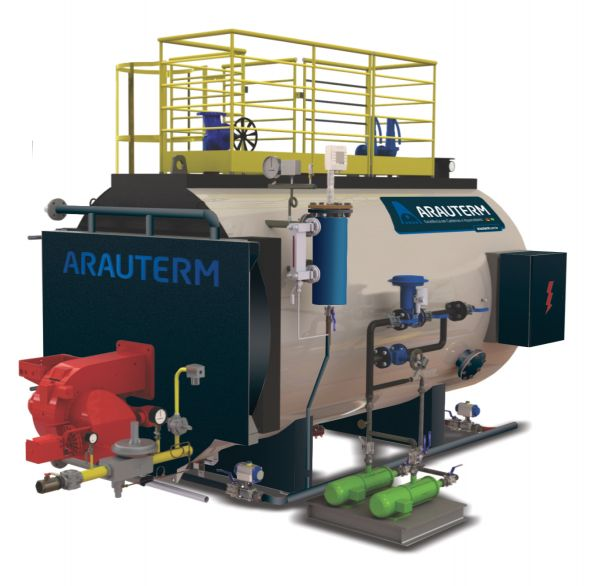
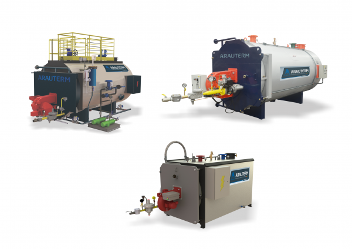
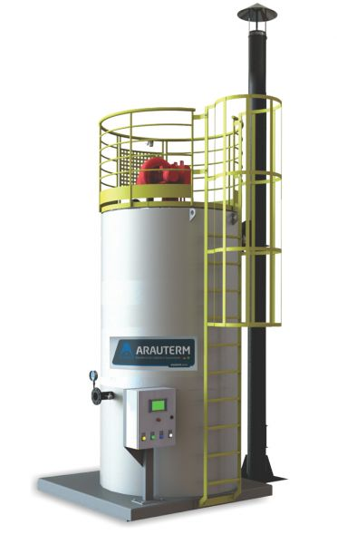
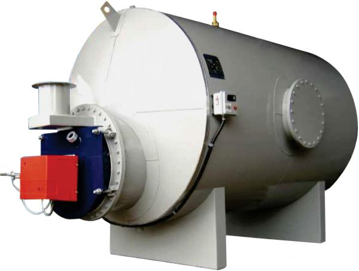
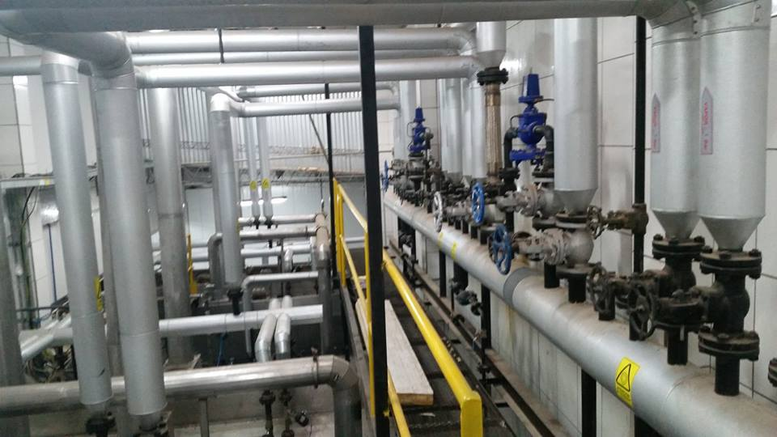
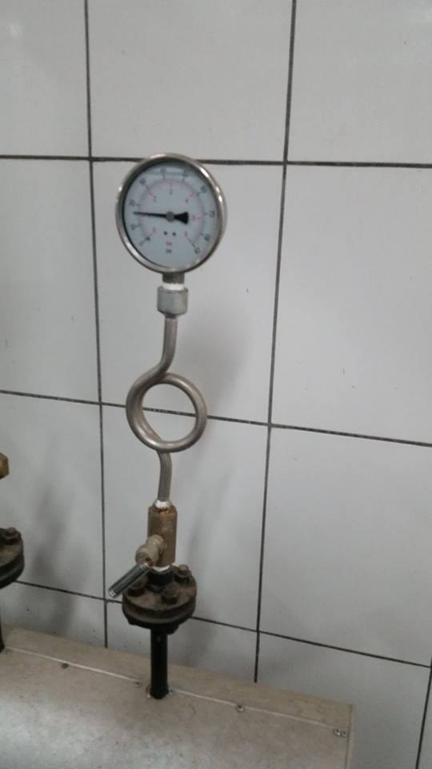

Integramos equipos de generación térmica, redes de distribución de vapor y condensado, tratamiento de agua de alimentación, tableros de control y puesta en marcha para entregar una solución ajustada a cada proceso.
WIP acompaña la selección, provisión e integración de sistemas térmicos para aplicaciones industriales, comerciales e institucionales en toda Bolivia.
Nuestro alcance no se limita al suministro del equipo principal: diseñamos el combustible, la línea de alimentación de agua desmineralizada o ablandada, el manifold de distribución de vapor, las estaciones reductoras de presión (PRV), el retorno de condensado, la automatización y el monitoreo continuo de variables críticas.
Generadores de vapor, biomasa, calentadores de fluido térmico y agua caliente de comprobada robustez.
Ingeniería de tuberías, soldadura homologada ASME/AWS, aislamiento térmico y pruebas hidrostáticas.

Líneas de equipos térmicos dimensionadas según la demanda energética, combustible disponible y requisitos operacionales de cada industria.

Generación de VaporGeneración de vapor saturado para procesos de manufactura, calentamiento, esterilización, lavandería, industria alimentaria, farmacéutica y hospitales. Configuraciones eléctricas, gas/aceite y combustibles sólidos.

Energía Renovable & BiomasaSoluciones para aprovechamiento térmico eficiente de biomasa, biogás, biometano, cáscaras, aserrín y combustibles agrícolas, optimizando el costo energético y reduciendo emisiones.

Transferencia TérmicaSistemas para procesos que requieren altas temperaturas (hasta 300°C o más) a bajas presiones de trabajo, utilizando aceites térmicos minerales o sintéticos con máxima seguridad operativa.

Agua Caliente IndustrialEquipos de producción y almacenamiento de agua caliente sanitaria e industrial para procesos comerciales, hoteles, sanatorios, clubes, lavanderías y circuitos de precalentamiento.
Una caldera requiere una red de distribución calculada y ejecutada con precisión para operar sin pérdidas energéticas. En WIP diseñamos, fabricamos e instalamos tuberías de vapor, distribuidores, estaciones de regulación PRV, aislamiento térmico y sistemas de trampeo.
Cálculo y soldadura de distribuidores hasta 10 bar / 3 ton para ramales de proceso independientes.
Sets de regulación PRV con bypass, manómetros y medidores de caudal para auditoría de vapor.
Eliminación de condensado y aire mediante trampas mecánicas/termodinámicas recuperando calor al tanque de alimentación.



Equipamiento auxiliar y desarrollos especiales para optimizar la seguridad y el rendimiento de la planta térmica.
Quemadores electrónicos y mecánicos, bombas de alimentación de alta presión, presostatos, controles de nivel, válvulas de seguridad homologadas y manómetros calibrados.
Sistemas de recuperación de calor de gases de combustión (economizadores de agua o aire) y multiciclones para retención de partículas en calderas de leña o biomasa.
En coordinación técnica con Arauterm evaluamos y desarrollamos tanques especiales, construcción de serpentines y recipientes a presión según las necesidades exactas del cliente.
Garantizamos la máxima vida útil y eficiencia energética interconectando el sistema térmico con tratamiento de agua y automatización.
El agua cruda destruye calderas por incrustaciones y corrosión acelerada. Proveemos ablandadores de intercambio iónico, ósmosis inversa para desmineralización total y sistemas de dosificación química para secuestrantes de oxígeno.
Integramos sensores de presión, transmisores de temperatura, monitoreo de conductividad de purgas y dashboards en la nube con alertas móviles ante desviaciones operativas o fallas de suministro.
Equipos y montajes adaptados a las exigencias térmicas de cada industria en Bolivia.
La capacidad, presión de diseño, tipo de combustible, materiales constructivos, accesorios y condiciones de instalación se validan formalmente durante el relevamiento de ingeniería. Los modelos y rangos publicados son referenciales y están sujetos a disponibilidad y dimensionamiento técnico.
Comparta su demanda de vapor o calor, combustible disponible, presión de trabajo y características de su proceso. Nuestro equipo de ingenieros elaborará una propuesta técnica y económica formal.